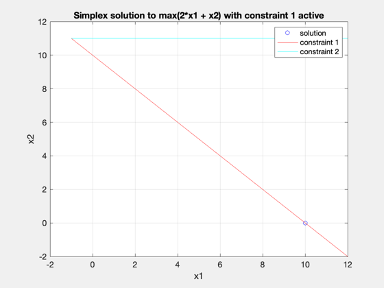
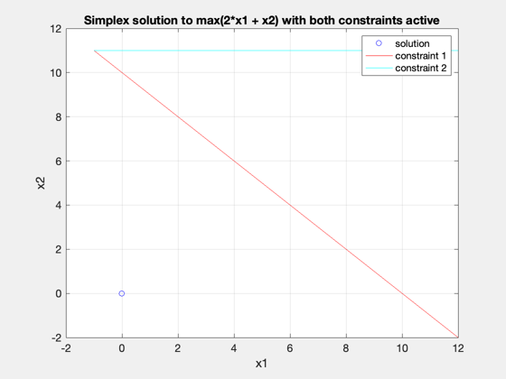

Solve an infeasible LP with simplex through constraint relaxation
------------------------------------------------------------------------ See also NewFig, Simplex ------------------------------------------------------------------------
Contents
%-------------------------------------------------------------------------- % Copyright (c) 2009 Princeton Satellite Systems, Inc. % All rights reserved. %-------------------------------------------------------------------------- % Since version 8. %--------------------------------------------------------------------------
form problem
In this problem, demonstrate the ability of simplex to handle infeasible problems and return a "best" solution. The Simplex interface is
[u, f, rc] = Simplex( c, a, b, maxValue, maxIter, slack, relax, nhardcon, nsofteq )
problem definition: max 2*x1 + x2 subject to: x1 + x2 .le. 10 x1 .ge. 11 (infeasible constraint)
% first solve with only the hard constraint a = [1 1 1]; b = [10]; c = [-2 -1 0]; [u,f] = Simplex(c,a,b); % plot solution NewFig('Simplex with Hard Constraint') plot(u(1),u(2),'bo') xlabel('x1') ylabel('x2') hold on fplot(@(x) -x+10,[-1 12],'r-') grid on fplot(@(x) 11, [-1 12],'c-') legend('solution','constraint 1','constraint 2') clear title title('Simplex solution to max(2*x1 + x2) with constraint 1 active')
Warning: Function behaves unexpectedly on array inputs. To improve performance, properly vectorize your function to return an output with the same size and shape as the input arguments.
add infeasible constraint
a = [1 1 1 0; 0 1 0 -1]; b = [10; 11]; c = [-2 -1 0 0]'; [u] = Simplex(c,a,b); % plot solution NewFig('Simplex with Infeasible Constraint') plot(u(1),u(2),'bo') xlabel('x1') ylabel('x2') hold on fplot(@(x) -x+10,[-1 12],'r-') grid on fplot(@(x) 11, [-1 12],'c-') legend('solution','constraint 1','constraint 2') title('Simplex solution to max(2*x1 + x2) with both constraints active')
Warning: Function behaves unexpectedly on array inputs. To improve performance, properly vectorize your function to return an output with the same size and shape as the input arguments.
relax infeasible constraint
a = [1 1 1 0; 0 1 0 -1]; b = [10; 11]; c = [-2 -1 0 0]'; [u,flag,s] = Simplex( c, a, b, [], [], [], 1, 1, 1 ); % plot solution NewFig('Simplex with Constraint Relaxation') plot(u(1),u(2),'bo') xlabel('x1') ylabel('x2') hold on fplot(@(x) -x+10,[-1 12],'r-') grid on fplot(@(x) 11, [-1 12],'c-') legend('solution','constraint 1','constraint 2') title('Simplex solution to max(2*x1 + x2) with 2nd constraint relaxed') %-------------------------------------- % $Id: cd77183852de0c7d9d036e08f4c47cbf439bbe29 $
Warning: Function behaves unexpectedly on array inputs. To improve performance, properly vectorize your function to return an output with the same size and shape as the input arguments.